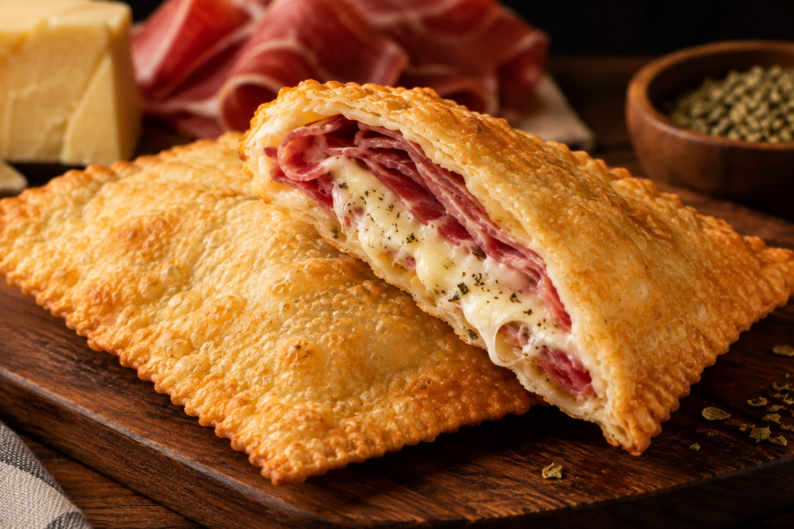
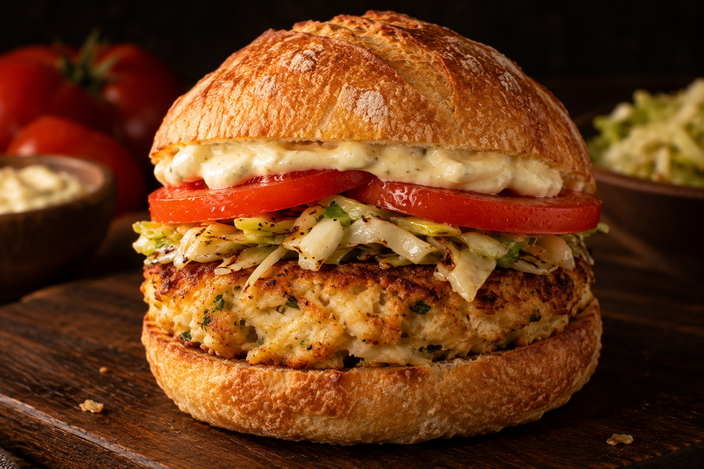
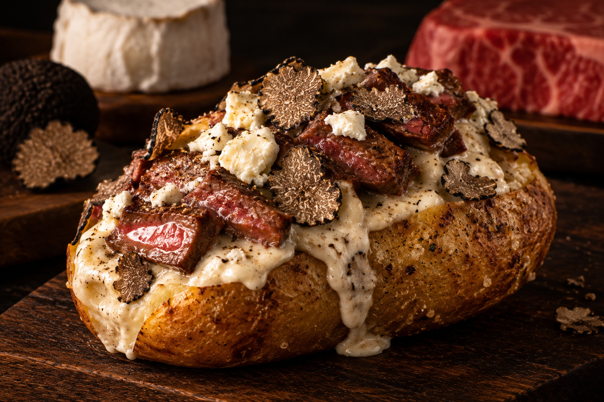
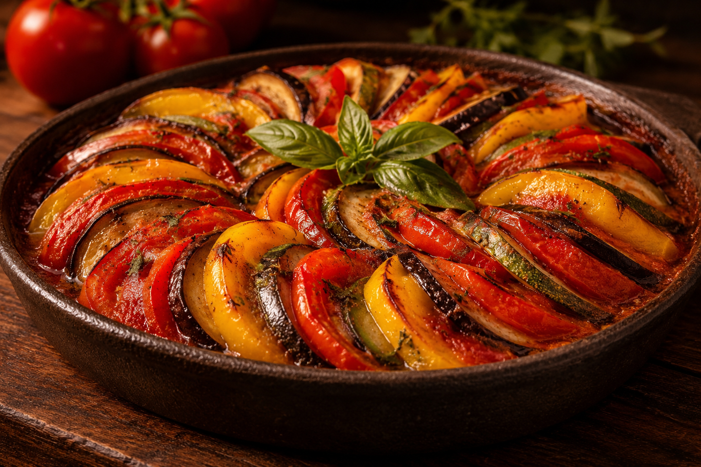
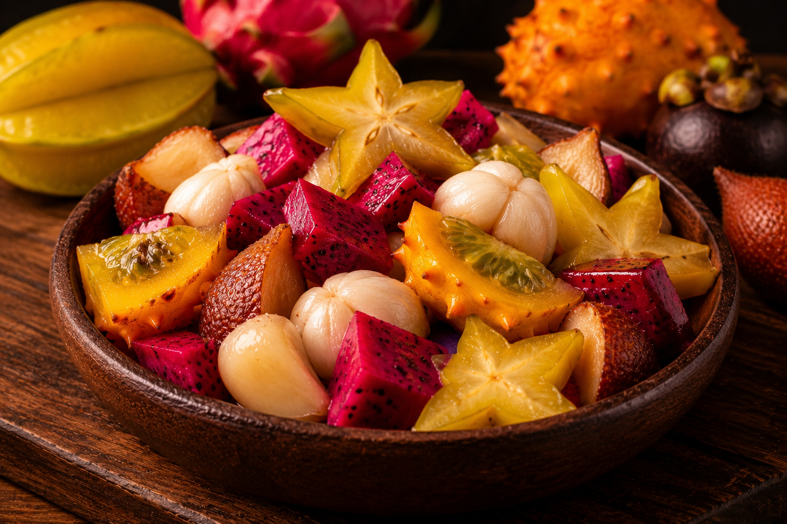
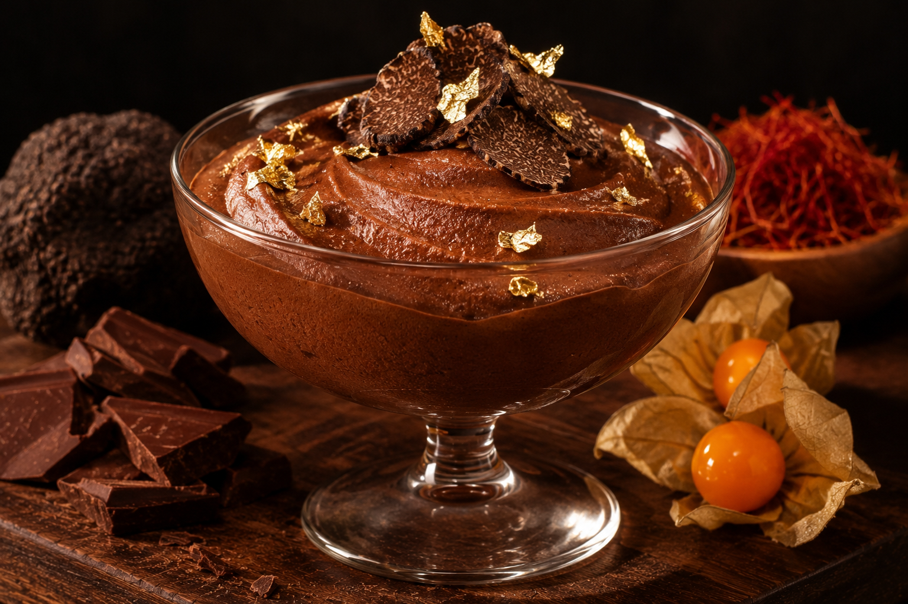

Cantina Bauda's
Seja bem-vindo à Bauda's, um espaço onde a criatividade encontra a gastronomia e cada prato conta uma história. Nossa proposta é transformar ingredientes extraordinários em experiências únicas, combinando sabores tradicionais, ingredientes exóticos e referências culinárias de diferentes partes do mundo. De receitas artesanais a combinações surpreendentes, cada detalhe é pensado para proporcionar uma experiência especial. Aqui, cada refeição é um convite para descobrir novos sabores, explorar culturas e apreciar o prazer de comer bem.

O Pastel | R$12.90
Uma massa artesanal, fina e delicadamente crocante, recheada com generosas fatias de presunto de bisão suíço e queijo italiano derretido. Finalizado com orégano da antiga Pérsia, apresenta uma combinação marcante entre a intensidade da carne, a cremosidade do queijo e o aroma das especiarias orientais.
- Ingredientes:
- Massa de pastel fresca
- Queijo Italiano
- Presunto de Bisão suiço
- Orégano da Pérsia antiga

Hambúrguer de Siri | R$34.90
Um generoso hambúrguer artesanal de siri de 250g, servido em pão de fermentação natural levemente tostado, acompanhado de maionese especial da casa, tomates frescos em fatias e repolho delicadamente refogado. Uma combinação equilibrada entre a suculência do mar e a rusticidade da panificação artesanal.
- Ingredientes:
- Pão de fermentação natural
- Maionese da casa
- Tomates frescos em fatias
- Repolho refogado
- Hambúrguer de Siri 250g

Batata Vulcânica | R$29.90
Uma imponente batata dos campos holandeses, assada até atingir uma casca dourada e interior macio, recheada com suculentos filetes de carne Wagyu, queijo de cabra Cheviot e molho branco cremoso. Finalizada com delicadas lâminas de trufas negras dos Montes Russos, proporcionando uma experiência intensa e sofisticada.
- Ingredientes:
- Batata dos campos holandeses
- Trufas negras colhidas nos montes russos
- Queijo de cabra Cheviot
- Molho branco feito pela Paola Carosella
- Filetes de carne Wagyu

Ratatouille | R$16.90
Uma composição artesanal de vegetais selecionados, reunindo tomates frescos colhidos em 29 de fevereiro, cebola roxa cultivada na Amazônia, pimentões amarelos de Guadalajara, abobrinhas patisson e berinjelas japonesas. Assados lentamente e organizados em camadas, preservam suas texturas e sabores naturais em uma apresentação colorida e delicada.
- Ingredientes:
- Tomates frescos colhidos sempre 29/02
- Cebola Roxa plantada na Amazônia
- Pimentão amarelo de Guadalajara
- Abobrinha patisson
- Beringela japonesa

Salada de Frutas Exóticas | R$19.90
Uma seleção extraordinária de frutas provenientes de diferentes regiões tropicais do mundo. Carambola dourada, pitaya de polpa vibrante, mangostão delicadamente adocicado, kiwano de notas cítricas e salak de sabor singular. Uma combinação refrescante de cores, aromas e texturas para uma experiência verdadeiramente exótica.
- Ingredientes:
- Carambola
- Pitaya
- Mangostão
- Kiwano
- Salak

Mousse de Chocolate | R$14.90
Um mousse aveludado de chocolate amargo 85% de cacau de Chuao, na Venezuela, finalizado com delicadas lâminas de trufas negras do Périgord, fios de açafrão vermelho da Caxemira e folhas de ouro 24 quilates. Acompanhado de physalis douradas dos Andes peruanos, oferece uma experiência de intensidade, sofisticação e equilíbrio entre o amargo e o agridoce.
- Ingredientes:
- Chocolate 85% de cacau, de Chuao na Venezuela
- Trufas negras de Périgord na França
- Açafrão vermelho vindo de Caxemira na Índia
- Folhas de ouro 24 quilates do Japão
- Physalis dourada dos Andes peruanos
Sabores extraordinários têm origens extraordinárias!
Acreditamos que uma experiência gastronômica excepcional começa muito antes do primeiro sabor. Por trás de cada prato existe uma seleção especial de ingredientes, inspirados em diferentes regiões do mundo e em tradições gastronômicas únicas. Valorizamos a singularidade de cada produto, suas características e sua origem. Queremos que você conheça não apenas o que está saboreando, mas também a história por trás de cada ingrediente. Curioso para descobrir de onde vêm nossos ingredientes? Explore nossas fontes e conheça as origens, particularidades e histórias dos produtos que tornam nosso cardápio tão especial.